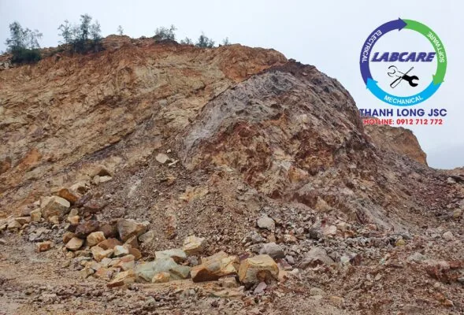

Các công ty ở khu vực BR-VT, Bình Phước, Bình Dương, Kiên Giang, An Giang, đặc biệt Phía Miền Trung và Phía Bắc, … Đầu tư máy rửa cát tự nhiên nhưng không đạt hiệu quả như mong muốn dù đã đầu tư số tiền không nhỏ. Vậy vì sao các chủ mỏ lại quyết định “chốt cọc” ngay sau khi vừa gửi Báo giá máy rửa cát Thanh Long ?
Đặc điểm của dây chuyền rửa cát nhân tạo
Để đạt được hiệu quả rửa cát cao nhất và khả năng rửa cát thành phẩm đạt tiêu chuẩn. Một số lưu ý thiết bị mà vẫn đảm bảo các yếu tố sạch, công suất cát nhân tạo thành phẩm. Các lưu ý này thường có ảnh hưởng đến nhau và quyết định xem dây chuyền rửa cát có đạt hiệu quả sau khi đã qua xử lý hay không ?
BPTV ĐƯA TIN VỀ DÂY CHUYỀN MÁY NGHIỀN CÁT LỚN NHẤT MIỀN NAM
1. Thành phần hỗn hợp cát trước khi vào máy rửa cát
Thành phần hỗn hợp cát rất đa dạng phụ thuộc vào từng khu vực khai thác, không thể sử dụng một phương pháp cho tất cả các mỏ. Nhưng về cơ bản hỗn hợp cát sẽ trộn lẫn các thành phần cơ bản sau. Và quan tâm đến các chỉ số vật liệu đầu vào :
Độ cứng của vật liệu
Kích thước hạt
Hàm lượng tạp chất
Tính chất vật lý
+ Cát
Cát chiếm tỷ lệ càng lớn thì đầu tư dây chuyền báo giá máy rửa cát càng hiệu quả. Tuy nhiên, trong thành phần cát, phải xác định rõ được tỷ lệ kích thước hạt.
Nếu tỷ lệ hạt siêu mịn càng lớn thì phải sử dụng các thiết bị chuyên dụng, kết hợp với các thiết bị rửa cát truyền thống.
Nếu tỷ hệ cát kích thước tiêu chuẩn từ 2mm – 3,5mm cao, thì đây là điều kiện chuẩn để thiết bị rửa cát phát huy hết khả năng của nó.

+ Sỏi
Các loại đá có kích thước lớn hơn 05 mm đều được gọi chung là sỏi. Tùy vào vị trí khai thác khoáng sản mà tỷ lệ sỏi nhiều hay ít.
Hầu hết sỏi có giá thành thấp hơn cát, nhưng đây được coi là nguyên liệu để sản xuất cát nhân tạo thông qua dây chuyền máy nghiền sỏi. Kích thước sỏi cũng một phần quyết định lắp đặt sàng phân loại – xịt rửa cao áp phù hợp.
Tỷ lệ sỏi trong hỗn hợp cát cao hơn 25% thì nên đầu tư dây chuyền máy nghiền sỏi thành cát nhân tạo
Trong 25% của hỗn hợp sỏi, nếu tỷ lệ kích thước trên 50 mm nhiều hơn 50%. Thì lên sử dụng máy kẹp hàm, để đưa sỏi về kích thước tiêu chuẩn dưới 50 mm.
+ Bùn đất, cao lanh, rễ cây, mùn rác, …
Đây là thành phần “không mong đợi” nhất và cần được loại bỏ ra khỏi hỗn hợp cát để đảm bảo độ sạch của cát. Thành phần “không mong đợi” này nhiều hay ít, cũng tùy thuộc vào vị trí địa lý khu vực khai thác.
II. Lựa chọn công nghệ và Báo giá máy rửa cát Thanh Long
Trước khi quyết định đầu tư dây chuyền máy rửa cát, để các chính phẩm đạt tiêu chuẩn. Hãy chọn mua thiết bị dây chuyền, từ các thương hiệu hoặc nhà cung cấp uy tín nhất. Tham khảo thông tin, kinh nghiệm từ những chủ mỏ đi trước về tính năng, tốc độ hoạt động và độ bền, … Đặc biệt, nhà cung cấp luôn hỗ trợ sự cố phát sinh sau khi đã lắp đặt thiết bị.
NGUYÊN TẮC nào để quyết định “CHỐT CỌC” ngay sau khi nhận được báo giá máy rửa cát Thanh Long ?
- Nguyên tắc 1: Máy rửa cát Thanh Long hỗ trợ 24/24 khi có sự cố thiết bị. Cam kết có mặt trực tiếp tại mỏ hoặc hướng dẫn video call nếu sự cố có thể xử lý ngay.
Rất nhiều nhà cung cấp máy rửa cát tự phát, kém chất lượng, … Đều “phủi tay” sau khi đã lắp đặt và ký nghiệm thu xong. Chẳng hạn như: BR-VT, Bình Phước, Bình Dương, Kiên Giang, An Giang, Phía Miền Trung và Phía Bắc thì rất nhiều không kể hết.
- Nguyên tắc 2: Thanh Long luôn đưa các phương án có nhiều khả năng hoàn vốn và lợi nhuận nhanh nhất. Quan trọng nhất vẫn là CHI PHÍ ĐẦU TƯ THẤP NHẤT.
- Nguyên tắc 3: ĐỪNG BAO GIỜ QUÊN 02 NGUYÊN TẮC TRÊN. Nếu quên hãy xem lại 2 nguyên tắc.
Dây chuyền báo giá máy rửa cát giải quyết nhiều vấn đề như:
- Phân loại vật liệu
- Loại bỏ tạp chất
- Xử lý nước thải, trước khi thải ra môi trường
- Quản lý chất thải rắn (Hàm lượng, khối lượng, tính chất vật lý, … )
Tìm hiểu thêm các dây chuyền rửa cát có sẵn, do Thanh Long cung cấp và lắp đặt ở ĐÂY như:. Rửa cát dạng guồng, máy rửa trục vít, máy rửa cát McLanahan ra theo kích thước yêu cầu.
Hình ảnh thiết bị và sản phẩm thực tế của dây chuyền rửa cát nhân tạo – báo giá máy rửa cát
Khánh thành dây chuyền nghiền cát nhân tạo lớn nhất Đông Nam Bộ
Ngoài ra, Thanh Long còn có Máy Rửa Cát ra 2 kích thước khác nhau, ở Việt Nam CHƯA NHÀ CUNG CẤP NÀO LÀM ĐƯỢC
- Tiết kiệm được vốn đầu tư “gấp đôi”
- Sản phẩm thu về được “gấp đôi”, chỉ Thanh Long JSC mới làm được việc đó
- Hiệu suất “gấp đôi”
- Thu hồi vốn nhanh “gấp đôi”
- Vật tư tiêu hao, nhân lực, điện năng tiêu hao giảm xuống “gấp đôi”
- Thiết kế và lắp đặt hệ thống điện thông minh, giúp vận hành nhanh chóng
- Kèm theo máy có lan can và cầu thang, để theo dõi sản xuất máy.
Nhắc tới MÁY RỬA CÁT là nghĩ ngay đến MÁY RỬA CÁT THANH LONG

Báo giá máy rửa cát nhanh nhất xin liên hệ (miễn phí): 0912.712.772
Thanh Long JSC chuyên cung cấp :
- Trạm nghiền cát/đá: Máy kẹp hàm, máy nghiền côn, sàng rung phân loại, máy nghiền cát, trạm nghiền đá di động, …
- Công nghệ rửa/tách: Máy rửa cát theo module, sàng rung tách nước, máy tách cát mịn, máy thu hồi cát mịn,..
- Thiết bị phụ tùng, vật tư: Dao nghiền, lưới sàng, má kẹp, nón côn,...
Kênh video Youtube: Thế giới máy nghiền đá Thanh Long JSC
Website: https://thegioimaynghienda.com
#bn